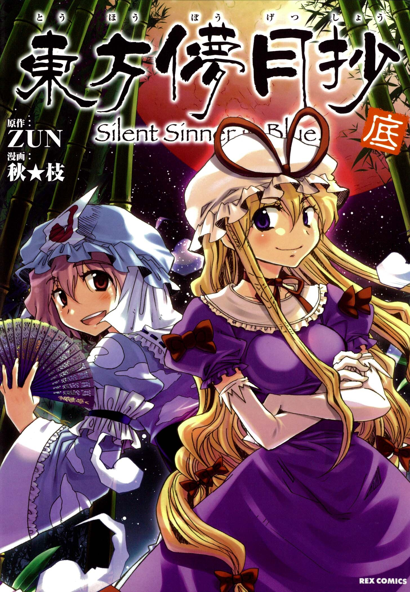

Touhou Bougetsushou is a loosely interconnected storyline about the Lunarians that includes Silent Sinner in Blue, Cage in Lunatic Runagate, and Inaba of the Moon and Inaba of the Earth.
Silent Sinner in Blue follows the efforts of Reimu Hakurei, Marisa Kirisame, and the residents of the Scarlet Devil Mansion as they attempt to send a rocket to the moon, purportedly in order to invade the Lunar Capital.
The stand-alone stories in Cage in Lunatic Runagate offer detailed background information to the events in Silent Sinner in Blue, offering the insights and perspectives of various major and minor characters, and of those who didn't appear at all.
Touhou Bougetsushou ~ Inaba of Moon & Inaba of Earth is a series of comedic 4koma strips. (The Canonicity of these are highly debated).